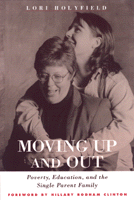

Focusing on single women with children in poverty and the obstacles they encounter in trying to change their lives and class position
Focusing on single women with children in poverty and the obstacles they encounter in trying to change their lives and class position


 Focusing on single women with children in poverty and the obstacles they encounter in trying to change their lives and class position
Focusing on single women with children in poverty and the obstacles they encounter in trying to change their lives and class position

|  |
Moving Up and OutPoverty, Education, and the Single Parent FamilyLori Holyfield, foreword by Hillary Rodham Clintonpaper EAN: 978-1-56639-915-9 (ISBN: 1-56639-915-7) |
"There is no reason that this wonderful idea can't work in places beyond Arkansas. Local businesses, foundations, churches, civic organizations, and private citizens can join together to form their own scholarship funds and their own committees, designed to help single parents in their communities lift themselves and their families out of poverty on a permanent basis."
—Hillary Rodham Clinton, founding Board President of the Arkansas Single Parent Scholarship Fund
Single parent families in the United States have almost tripled in the past few decades. A huge majority of these families are female headed. In American culture it is not so important that we all be equal so much as it is that we all have equal opportunities. Yet sometimes we turn a blind eye to those who need us most. In fact, when it comes to single parent families, it is as if the barriers are too great, the issues too complex. We wind up reducing the debate to its lowest common denominator. Ironically, it is the families who are most affected that get tangled in the political barbed wire and hidden behind numbing statistics. Moreover, community responses, those small grassroots organizations who care deeply and give whole-heartedly are seldom celebrated, seldom recognized for their empowering efforts. Moving Up and Out focuses on just such a program, the Arkansas Single Parent Scholarship Fund, which has since 1984 provided scholarships for single parents interested in obtaining their post-secondary education. In this story of a highly successful nonprofit, Lori Holyfield (herself a recipient of a scholarship) draws upon the voices of single parents to consider the barriers and struggles faced as they attempt to obtain secondary education and change the lives of both themselves and their children. The help this program has brought to Arkansas residents is needed throughout the country.
Excerpt available at www.temple.edu/tempress
"Holyfield looks realistically at what education can and cannot do in relation to upward mobility for poor women. She attends carefully to race and gender. I am persuaded by what I take to be her main argument: that education really does make a difference in terms of income and job opportunities and the chance to get ahead."
—Susan Ostrander, Professor of Sociology, Tufts University and author of Money for Change and Women of the Upper Class
"Moving Up and Out is a well-written celebration of a program and the success of specific individuals, rather than an analysis of poverty. The book's strengths are its detailed discussion of the program, followed by hints for how to start one like it and the actual voices of the women, detailing how poverty itself and the welfare system affect them day-to-day. It will be useful to activists, policy makers, and general audiences."
—Dr. Lynda Ames, Professor of Sociology, State University of New York, Plattsburgh, and co-author of Women Reformed, Women Empowered (Temple)
"Holyfield was a high school drop-out struggling as a head of household who eventually completed her GED and went on to finish a Ph.D. She was also one of the first single parents to receive a scholarship from the Arkansas Single Parent Scholarship Fund (ASPSF), a nonprofit organization that since 1984 has provided scholarships for struggling single parents interested in continuing their education. Holyfield, now assistant professor of sociology, University of Arkansas, Fayetteville, has written this book for two reasons: to share the stories of the ASPSF scholarship recipients as they work their way out of poverty and to provide a useful guide for communities beyond Arkansas that want to set up a similar scholarship fund. She ably accomplishes both goals. The only minor drawback is that the personal glimpses are often too brief. Senator Hilary Rodham Clinton, who was a founding board president of the fund, has written a compelling foreword, challenging local business, churches, civic organizations, and others to form their own funding committees."
—Library Journal
Read a review on Education Review, July 2004, written by Michele S. Moses.
Foreword
Preface
Acknowledgments
Introduction
1. It Ain't That Simple
2. Barriers to Success
3. Myths and Images: The Morality Trap
4. Education and Mobility
5. Chance and Choice
6. Starting a Single Parent Scholarship Program: Ingredients for Success
7. Where Do We Go from Here?
Appendixes
Notes
References
Index
Lori Holyfield is Associate Professor in the Department of Sociology at the University of Arkansas in Fayetteville.
© 2015 Temple University. All Rights Reserved. This page: http://www.temple.edu/tempress/titles/1586_reg.html.